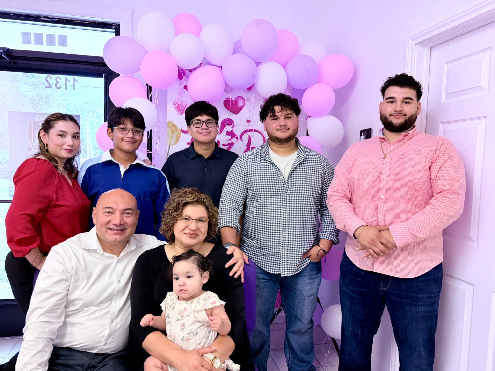
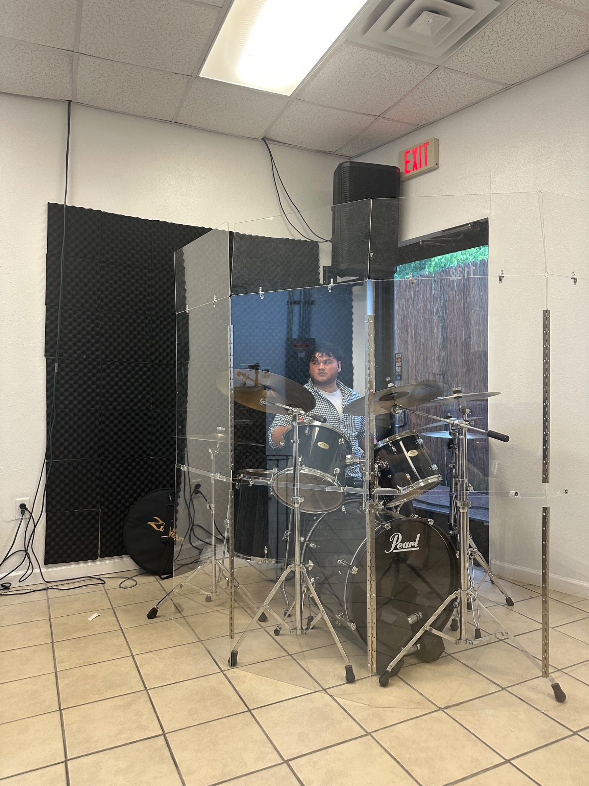
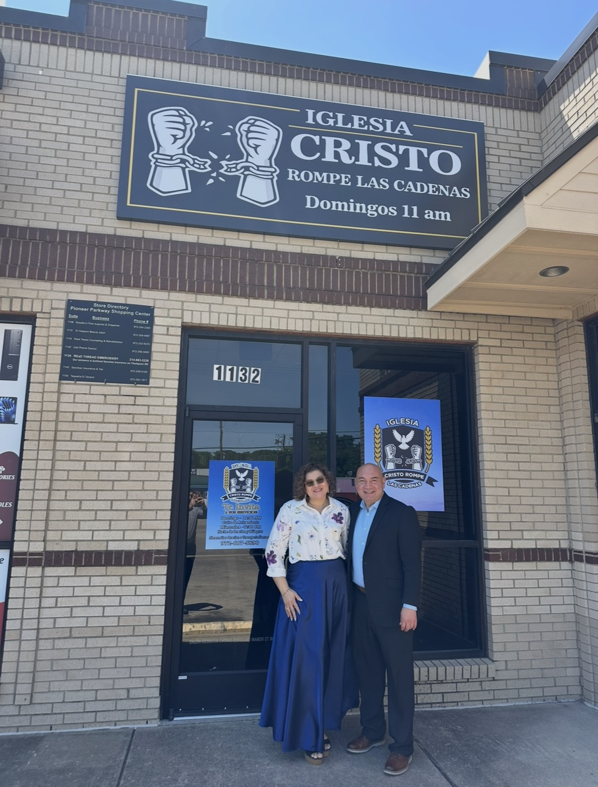
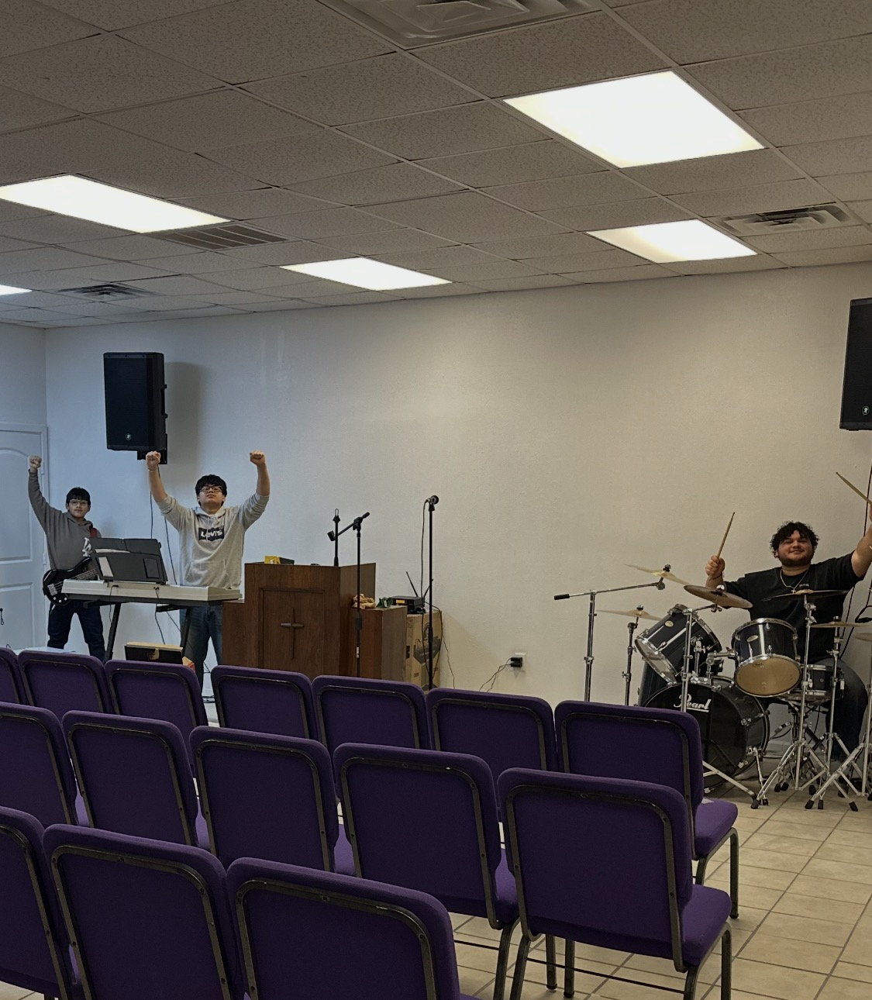
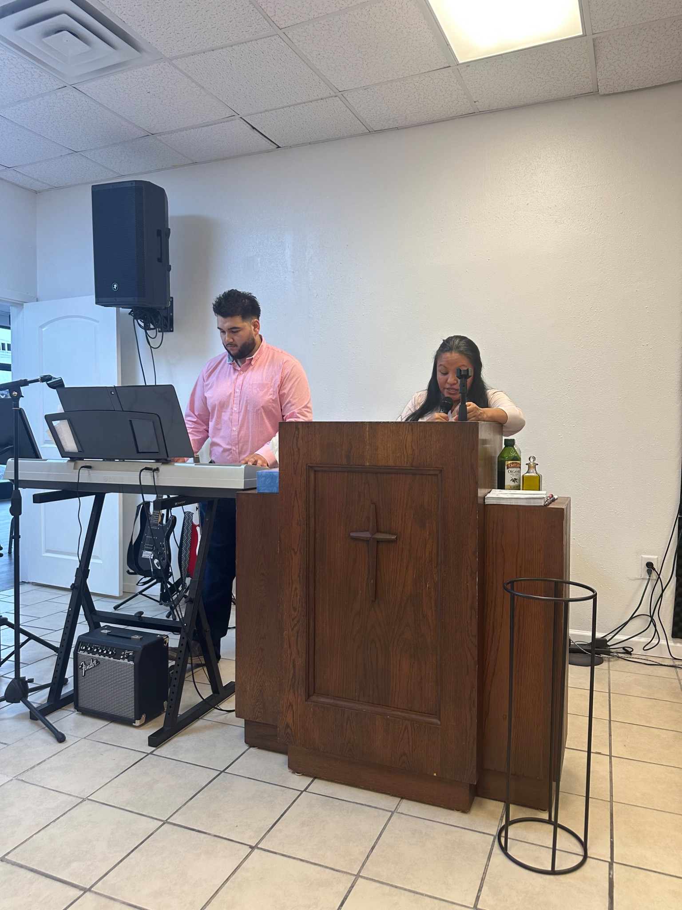
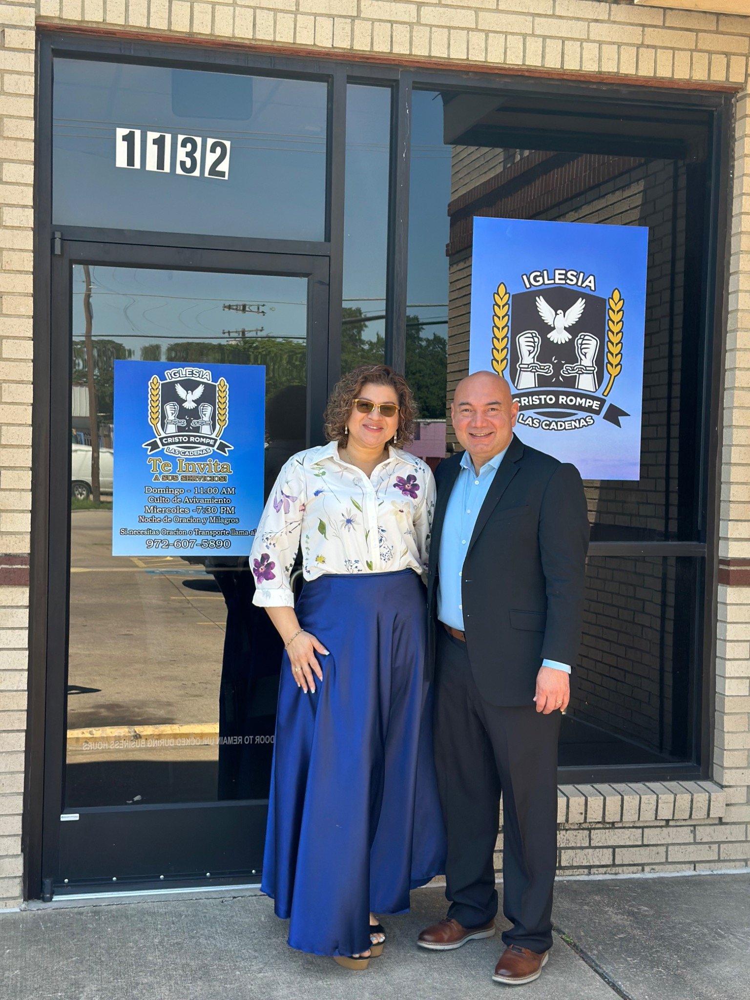
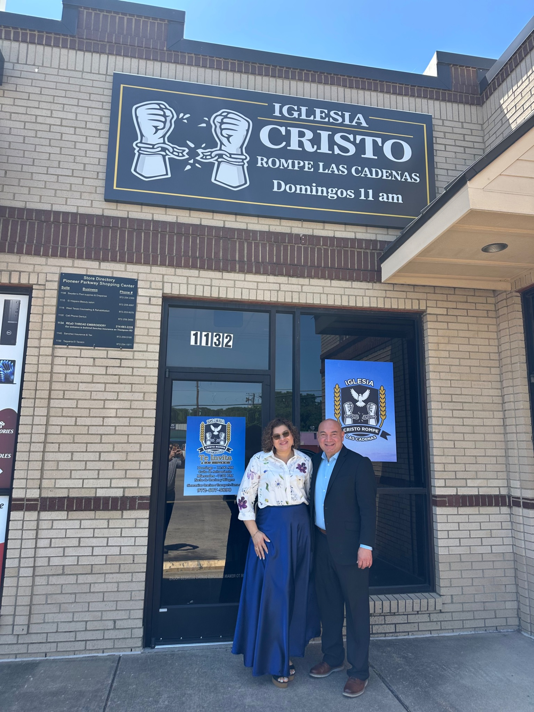
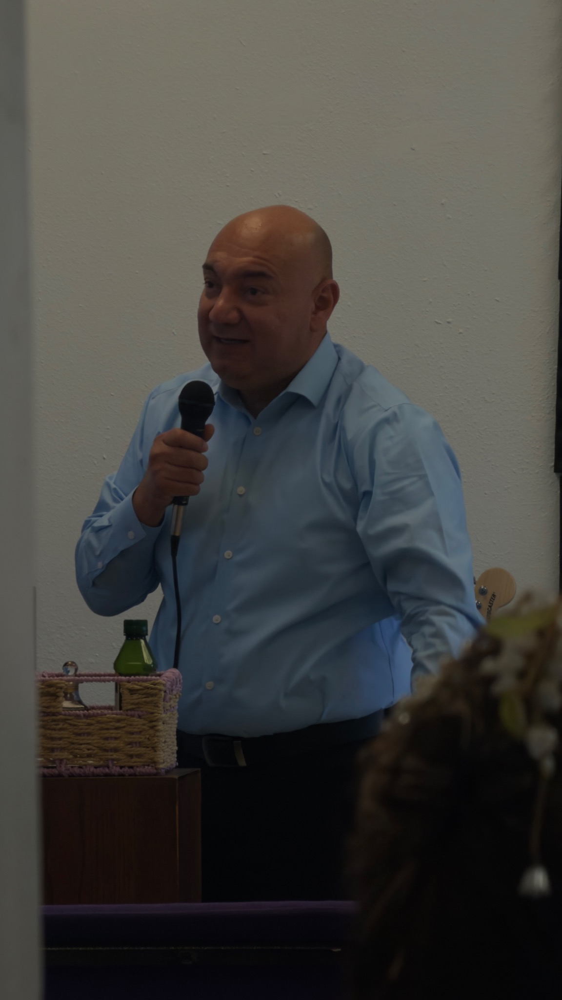

Cristo Rompe Las Cadenas
Una iglesia pentecostal en Irving, Texas, donde adoramos a Dios, predicamos Su Palabra y creemos en el poder de Jesucristo para transformar vidas.
A Pentecostal church in Irving, Texas where we worship God, preach His Word, and believe in the power of Jesus Christ to transform lives.
Acompáñanos Esta Semana
Eres bienvenido. Ven con tu familia a adorar, orar y recibir una palabra de Dios.
You are welcome. Come with your family to worship, pray, and receive a word from God.
Servicio Dominical
Domingos 11:00 AM
Adoración, predicación, oración y comunión.
Sunday Service — 11:00 AM
Servicio Entre Semana
Miércoles 7:30 PM
Un tiempo de oración, enseñanza y fortalecimiento espiritual.
Wednesday Service — 7:30 PM
Ubicación
1132 W Pioneer Dr
Irving, TX 75061
(972) 607-5890
Una Familia de Fe
Iglesia Cristo Rompe Las Cadenas es una iglesia pentecostal apasionada por la presencia de Dios, la oración, la adoración y la restauración de las familias.
Creemos que Jesucristo salva, sana, restaura y rompe toda cadena. Nuestra misión es predicar el Evangelio, levantar el nombre de Jesús y servir a nuestra comunidad con amor.
We believe Jesus Christ saves, heals, restores, and breaks every chain.

Lo Que Creemos
Somos una iglesia cristiana pentecostal que cree en el poder de Dios para cambiar vidas.

Adoración Con Pasión
Cada servicio es una oportunidad para buscar la presencia de Dios con adoración, oración y una palabra viva.
Every service is an opportunity to seek the presence of God through worship, prayer, and the Word.
Adoración
Música en vivo y alabanza con todo el corazón.
Oración
Creemos por sanidad, libertad y restauración.
Galería
Momentos de nuestra iglesia, adoración, familia y servicios.






Planifica Tu Visita
Nos encantaría recibirte a ti y a tu familia este domingo.
Domingos 11:00 AM • Miércoles 7:30 PM